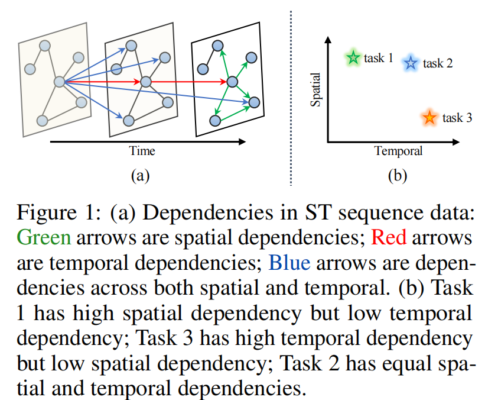
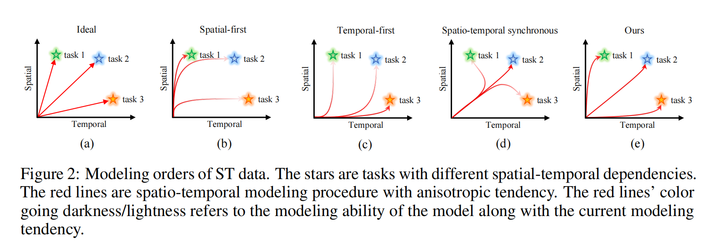
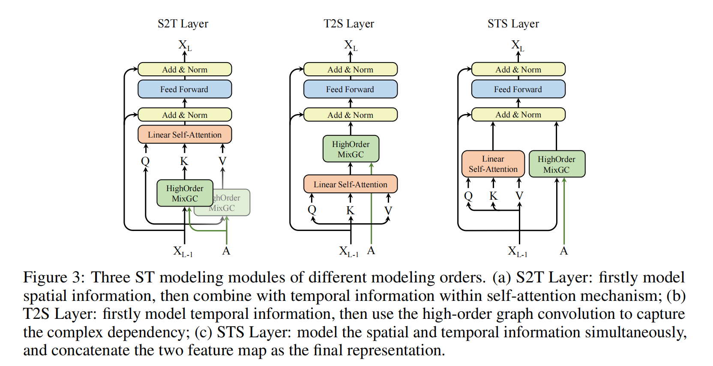
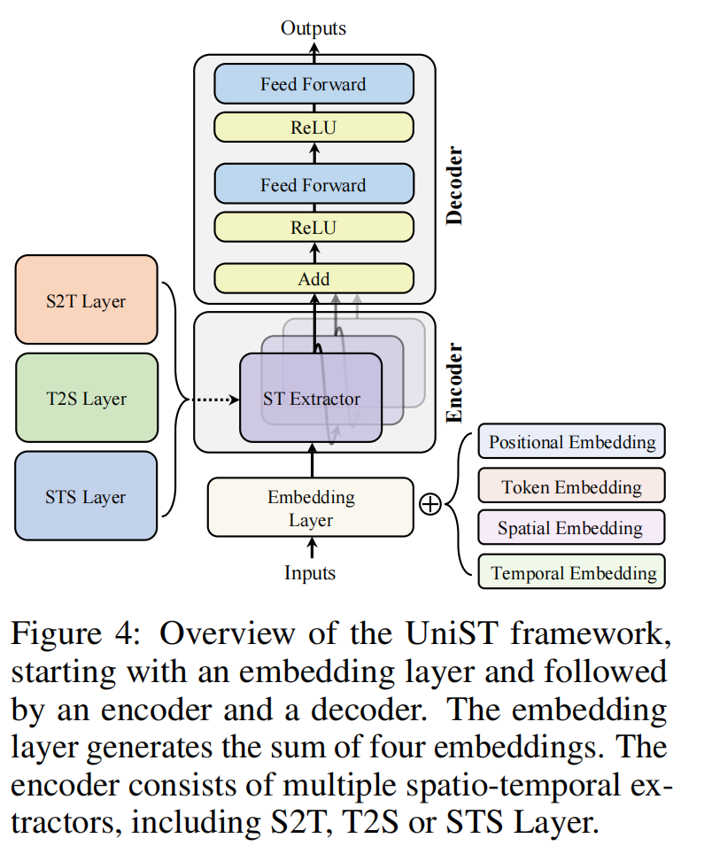
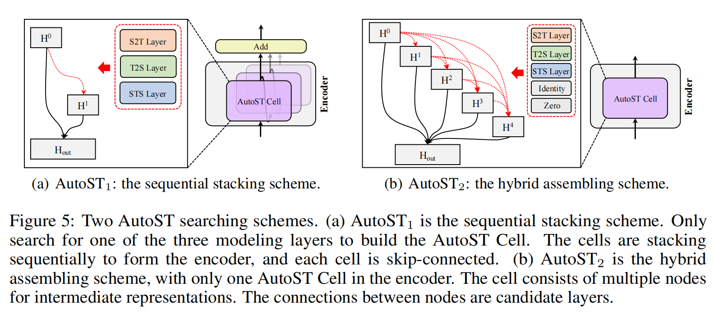
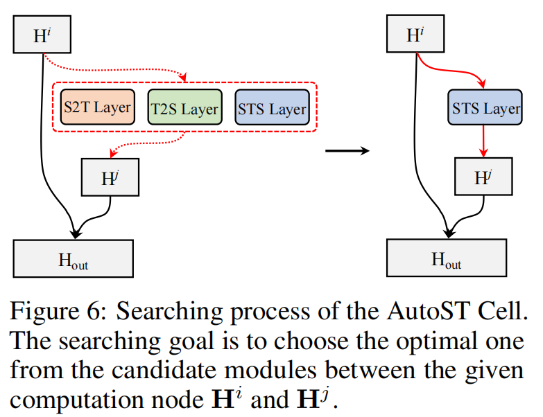
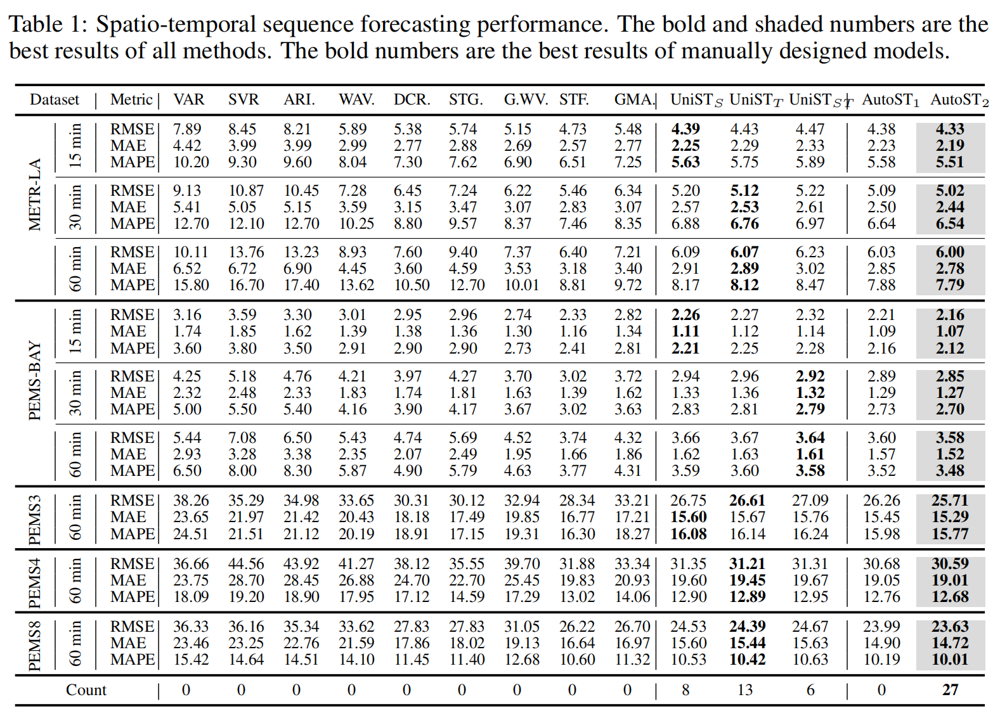

The blog introduces the paper : AutoST:Towards the Universal Modeling of Spato-temporal Sequences
Introduction

Previous research for different forecasting tasks fall into three typical paradigms：
- Spatial-first modeling
- Temporal-first modeling
- Spatio-temporal synchronous modeling
However, the distribution of ST dependencies varies and depends on the forecasting task and corresponding datasets. They are mixed in a compound way when modeling ST sequences, and the three tasks in Fig.1(b) are the representative ones. What makes it worse is that, the prevalent modeling methods show anisotropic tendency to capture the ST dependency. If we use the spatial-first models on the three tasks in Fig.2(b), the task 1’s states are highly influenced by the surrounding information, and the periodic pattern is the underlying factors, which makes the spatial-first model fits it properly.
We can compare the model ability (red lines) with the ideal one in Fig.2(a), this kind of model will be insuffificient for task 2 and task 3. Similarly, suppose we use the temporal-first models on the three tasks in Fig.2©. In that case, the model ability only matches task 3, where the periodic pattern decides the states other than the spatial information. The previous analysis also applies to the spatio-temporal synchronous situation, where the states are mainly influenced by the complex associations across the spatial and temporal, like semantic relationships. In this paper, we aim to propose a universal model that alleviates the the modeling gap on different tasks.

The contributions are:
- The first to raise and address the modeling order problem in spatio-temporal forecasting tasks by proposing a universal modeling framework UniST and an automatic structure search strategy AutoST.
- Proposing 3 replacable and unified attention-based modeling units named S2T,T2S and STS, which model spatio-time sequence with three different priorities: spatial first, temporal first and spatio-temporal synchronous.
- Extensive experiments on 5 datasets and 3 sequence forecasting tasks demonstrate that only using our three modeling units outperforms the baseline methods, and our framework together with AutoST achieves the new state-of-the-art performance.
Related Work
Spatial-first:
- STG2Seq
- STGCN
- DCRNN
Temporal-first:
- Graph WaveNet
- GSTNet
Spatio-temporal synchronous:
- STSGCN
- STFGNN
- ST-ResNet
- ASTGCN
Preliminary
Spatio-temporal Sequence Forecasting
Spatio-temporal Sequence Forecasting is to predict the future sequence of spatio-temporal inputs based on the historical observations.
Given a graph $G = (V,E,A)$, where $V$ and $E$ are the node set and edge set, and $N$ is the number of nodes, $A \in \mathbb{R} ^{N \times N}$ is the adjacency matrix of $G$. $X =${$X _1,X _2,…,X _T$} is a ST sequence of $T$ time steps, where $X \in \mathbb{R} ^{T \times N \times C}$. The problem can be defined as:
$$[X _{(t-S):t},G]\overset{f}{\rightarrow}X _{(t+1):(t+P)}$$
Network Architecture Search
DARTS is the foundation of existing Auto ST-forecasting research, the objective function is:
$$\underset{\alpha}{min} L _{val} (w ^\ast(\alpha),\alpha) \quad s.t. w ^\ast (\alpha) = \underset{w}{argmin} L _{train} (w,\alpha)$$
where $\alpha$ is the architecture, and $w$ is the model weights.
Methods
- Introduce two basic modeling units: the time series linear self-attention and the high order mix graph convolution
- Propose three layers as different network backbones and build a universal modeling framework based on the three “atomic” layers
- Propose an automatic searching strategy for spatio-temporal information fusion, which aimed for the optimal order of spatio-temporal modeling on various downstream tasks
Spatial/Temporal Modeling Unit
Time Series Linear Self-Attention
Use the linear self-attention mechanism to decrease the time and space complexity:
$$V _i’ = \frac{\phi(Q _i) ^T \displaystyle\sum _{j=1} ^{N} \phi (K _j) V _j ^T }{\phi(Q _i) ^T \displaystyle\sum _{j=1} ^{N} \phi (K _j)}$$
where $\phi(\cdot)$ is a row-wise feature map.
High-order Mix Graph Convolution
To acquire better spatial information representation, we propose a high-order mix graph convolutional operation for spatial information mixing and feature extraction of the original inputs:
$$HighOrder(X, A, order) \overset{def}{=} H ^{order} = \begin{cases} X \quad order=0\\MixGC(X,A) \quad order=1\\ MixGC(H ^{(order-1)}A) \quad order>1 \end{cases}$$
$$MixGC(X,A)=ChebNet(X,A) + AdapDC(X,A)$$
$$ = \hat{A}XW _g + P _f X W _f +P _b X W _b + \hat{A} _{adp} X W _{adp}$$
$$\hat{A}=D ^{-\frac{1}{2}}\tilde{A}D ^{-\frac{1}{2}},\tilde{A}=A + I, D _{ii} = \sum _j \tilde{A} _{ij}$$
$P _f = \frac{A}{rowsum(A)},P _b = \frac{A ^T}{rowsum(A ^T)}$ refers to a forward and backward state transition matrix. $\hat{A} _{adp} = Softmax(ReLU(E _1 E _2 ^T))$ is an adaptive matrix for complementary spatial state information.
$order$ denotes the total order of graph convolution operations, i.e., to consider order-hop neighbor relationship of each node.
Unified Spatio-temporal Modeling Backbone
In order to solve the problem of spatio-temporal dependency distribution differences in the modeling procedure, we first propose three novel modules: S2T Layer, T2S Layer, STS Layer, that are suitable for three typical spatio-temporal dependencies: spatial-first, temporal-first, spatio-temporal synchronous, respectively. We design all these three modeling module to have the same dimension of inputs and outputs. This provides a solid foundation for our later flexible and universal modeling.

Spatial-first Modeling Layer
S2T Layer models from spatial to temporal.
$$Q = X _{L-1} W _Q$$
$$K=HighOrder _1(X _{L-1},A,order) W _K,V = HighOrder _2(X _{L-1},A,order)W _V$$
$$Z = Attention(Q,K,V)$$
$$X ^L = Norm(max(0,Norm(Z +X _{L-1})W _1 +b _1)W _2 +b _2)$$
Temporal-first Modeling Layer
T2S Layer models the ST sequence from temporal to spatial.
$$Q = X _{L-1} W _Q , K= X _{L-1}W _K, V = X _{L-1} W _V$$
$$Z’ = HighOrder(Z,A,order)$$
$$X ^L = Norm(max(0,Norm(Z’ +X _{L-1})W _1 +b _1)W _2 +b _2)$$
Spatial-temporal Synchronous Layer
STS Layer aims to model the spatial and temporal information simultaneously.
$$Q = X _{L-1} W _Q , K= X _{L-1}W _K, V = X _{L-1} W _V$$
$$Temporal \leftarrow Z _1 = Attention(Q,K,V)$$
$$Spatial \leftarrow Z _2 = HighOrder(X _{L-1},A,order)$$
$$Z’ = concat[Z _1,Z _2]$$
$$X ^L = Norm(max(0,Norm(Z’ +X _{L-1})W _1 +b _1)W _2 +b _2)$$
Universal Modeling Framework
Propose a unified ST sequence modeling framework (UniST) with the proposed unified modeling backbone as follows:

Spatio-temporal Embedding Layer
Fusion embedding
$$E _F = E _P + E _V + E _S +E _T$$
they will be replicated and expanded with broadcast on the respective missing dimensions.
Encoder
The encoder of UniST consists of multiple Spatio-Temporal Extractors $STE(\cdot)$, which can be arbitrarily chosen from {T2S Layer, S2T Layer, STS Layer}. All extractors are connected end to end, i.e., the output of the previous one is the input of the next one. To acquire a more diversity representation, the outputs of each extractor are added to form the final output of the encoder. Let the outputs of the embedding layer be $X _0$, the encoder is computed as:
$X _{en}=\sum _{i=1} ^L STE ^i (X _0)$, where L refers to the number of spatio-temporal extractors.
Decoder
The decoder accepts the output of encoder, i.e., L outputs from L spatio-temporal extractors. They are firstly added as a unified spatio-temporal representation. Then the results are through two times of ReLU activation and Linear projection, and produce the final sequence forecasting result. Denote $X _{\mathcal{l}}$ as the output of extractor $\mathcal{l}$, we have the calculation of decoder as:
$$\bar{Y}=X _{de}=Linear(ReLU(Linear(ReLU(\sum _\mathcal{l}X _\mathcal{l}))))$$
Automated Search for UniST
With the proposed unifified ST sequence modeling framework UniST, it still suffers from the potential wrong network configuration problem, where we build an arbitrary modeling order with the replaceable model units {T2S Layer, S2T Layer, STS Layer}. Considering the various downstream tasks, how can we build a universal model with an optimal configuration? Here we propose the Automated Spatio-Temporal modeling approach (AutoST), which learns the optimal combinatorial order that suits the spatio-temporal dependency of the current task. We designed two schemes for layer combination. In this section, we first define the basic searching unit of AutoST, then we introduce two designs of AutoST with different searching schemes.
AutoST Cell

Use the manner proposed in DARTS:
$$H ^j = \displaystyle\sum _{i<j}\sum _{o \in O} \frac{exp(\alpha _o ^{(i,j)})}{\sum _{o’ \in O}exp(\alpha _{o’} ^{(i,j)})}o(H ^i)$$

Experiments

The paper
If you like this blog or find it useful for you, you are welcome to comment on it. You are also welcome to share this blog, so that more people can participate in it. If the images used in the blog infringe your copyright, please contact the author to delete them. Thank you !